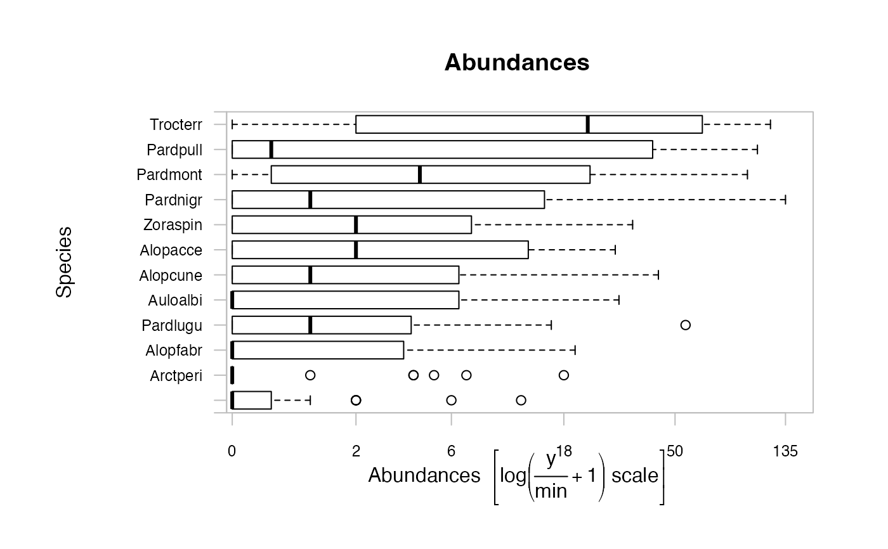
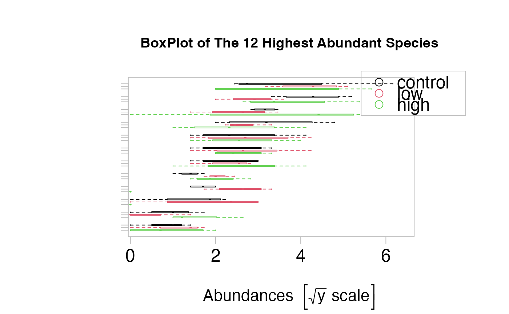

Boxplots for multivariate abundance Data
boxplot.mvabund.RdDraw Boxplots of mvabund or mvformula Objects
Arguments
- x
for the
mvabundmethodxspecifies the data from which the boxplots are to be produced. This can be either a numeric vector, or a single list containing such vectors. Additional unnamed arguments specify further data as separate vectors (each corresponding to a component boxplot). NAs are allowed in the data.
For the default method, unnamed arguments are additional data vectors (unlessxis a list when they are ignored), and named arguments are arguments and graphical parameters to be passed to in addition to the ones given by argument pars (and override those in pars).
For themvformulamethod, a formula, such asy ~ grp, where y is a numeric mvabund object of data values to be split into groups according to the grouping variable grp (a factor).- y
for the
mvabundmethodycan be an additionalmvabundobject, ifxisn't a list.- range
this determines how far the plot whiskers extend out from the box. If range is positive, the whiskers extend to the most extreme data point which is no more than range times the interquartile range from the box. A value of zero causes the whiskers to extend to the data extremes.
- names
only available for the
mvabundmethod: group labels which will be printed under each boxplot.- at
only available for the
mvabundmethod: numeric vector giving the locations where the boxplots should be drawn; defaults to1:nwherenis the number of boxes.- n.vars
the number of variables to include in the plot.
- overall.main
a character to display as title for every window.
- var.subset
a numeric vector of indices indicating which variables of the mvabund.object should be included on the plot.
- transformation
an optional transformation, (ONLY) for the
mvabundmethod. Note, that for themvabundmethodtransformationmust be used instead oflog.
Available values are:
"no" = untransformed, "sqrt"=square root transformed, "log" (default)=log(Y/min+1) transformed, "sqrt4" =4th root transformed.- ...
for the
mvformulamethod, named arguments to be passed to theplot.mvformulamethod. Some arguments that are available for themvabundmethod, are not available inplot.mvformulaand can therefore not available in themvformulamethod.For the
mvabundmethod, unamed arguments are additional data of vectors or matrices ormvabundobjects, (unlessxis a list when they are ignored),and named arguments are arguments and graphical parameters to be passed in addition to the ones given by argumentpars(and override those inpars).
Details
The function boxplot.mvabund allows simultaneous construction of many
variables on a single figure. Thus a good comparative overview about the
distribution of abundances for several species can be obtained.
There are several ways in which this function can be used.
If one mvabund object, either named x or y
or not names, is passed, it will be drawn on one plot and abundances can be
compared over several variables.
If two mvabund objects, named x and y are
passed for plotting, they will be shown on
one plot, showing for each species the abundances of both objects directly
one below the other.
If more than two mvabund objects are passed, each of them will be
plotted separately.
Additionally, it is possible to specify x as a list of mvabund objects.
Each of them will be plotted separately and any further mvabund data will
be ignored, regardless if it is specified as y or unnamed.
The function boxplot.mvformula can be used to draw boxplots of a mvabund
object in dependence of explanatory variables. The explanatory variables can be both
numerical values as well as factor variables. If the formula contains both of them,
there will be separate plots for the terms with numerical values and the terms
with factor variables, displayed on separate windows.
The arguments plot, varwidth and add, which are availabe in the default method of boxplot, are not available for the mvabund and mvformula methods. The argument horizontal is not available for the mvabund method.
A number of other arguments like at and names are only available for the
mvabund method.
Warning
The argument log, that is available in most plotting functions can not be used
for plotting mvabund or mvformula objects. Instead use transformation for the mvabund method and for the mvformula method
include transformations in the formula.
Value
In contrast to the default method (boxplot.default) nothing will be returned. These functions are only used for drawing the plots.
References
Warton, D. I. ( ) Raw data graphing: an informative but under-utilised tool for the analysis of multivariate abundances, , .
Examples
require(graphics)
#### Basic Use ####
data(spider)
spiddat <- spider$abund
X <- spider$x
## Create the mvabund object:
spiddat <- mvabund(spiddat)
## Draw a boxplot for a mvabund object:
boxplot(spiddat)
#> Kicking off BoxPlot sequence

## the same plot could be done by
plot(spiddat,type="bx")
#> Kicking off BoxPlot sequence
#### Advanced Use ####
data(solberg)
solbdat <- mvabund(solberg$abund)
treatment<- solberg$x
# create pch type and colour vectors
treat.pch <- treat.col <- unclass(treatment)
# Boxplot for data
plot.mvabund(x=solbdat,y=treatment,type="bx",
main="BoxPlot of The 12 Highest Abundant Species",
xlab="Abundance [sqrt scale]",ylab="",
transformation="sqrt",t.lab="o",shift=TRUE)
#> Overlapping points were shifted along the y-axis to make them visible.
#>
#> PIPING TO 1st MVFACTOR
#> Only the variables Halanonchus_sp., Terschellingia_longicaudata, Dorylaimopsis_punctatus, Marylynnia_complexa, Molgolaimus_sp., Aponema_torosa, Spirinia_parasitifera, Odontophora_sp., Daptonema_sp.1, Prochromadorella_sp., Halichoanolaimus_dolichurus, Sabatieria_longicaudata were included in the plot
#> (the variables with highest total abundance).
